Les actus
News, tests, astuces, guides, secrets et dramas de GTA 6. Chaque info est sourcée : si c'est une rumeur ou à tester en jeu, on te le dit.

GTA 6 : le menu caché des véhicules (moteur, feux de détresse, coffre, vitres)
Tous les véhicules de GTA 6 ont un menu de contrôle : couper et relancer le moteur, allumer les feux de détresse, ouvrir le coffre et baisser les vitres. C'est ce que rapporte NoobFeed, à vérifier en jeu.

GTA 6 : la salle de sport du repaire de Jason, comment s'entraîner et ce que ça rapporte
Dans le repaire de Jason, tu peux faire du développé couché, des squats et du soulevé de terre : maintiens L2 + R2. Selon NoobFeed, rater une série ne fait rien perdre, et Jason gagne 1 % de vie.

Comment voler une voiture dans GTA 6 : casser la vitre ou cloner la clé (et scanner avant)
Dans GTA 6, certaines voitures proposent deux invites : casser la vitre ou cloner la clé. Selon NoobFeed, l'option de clonage, grisée en bas à droite de l'écran, est la plus discrète, et le scan WAiNK te dit si le véhicule est piégé.
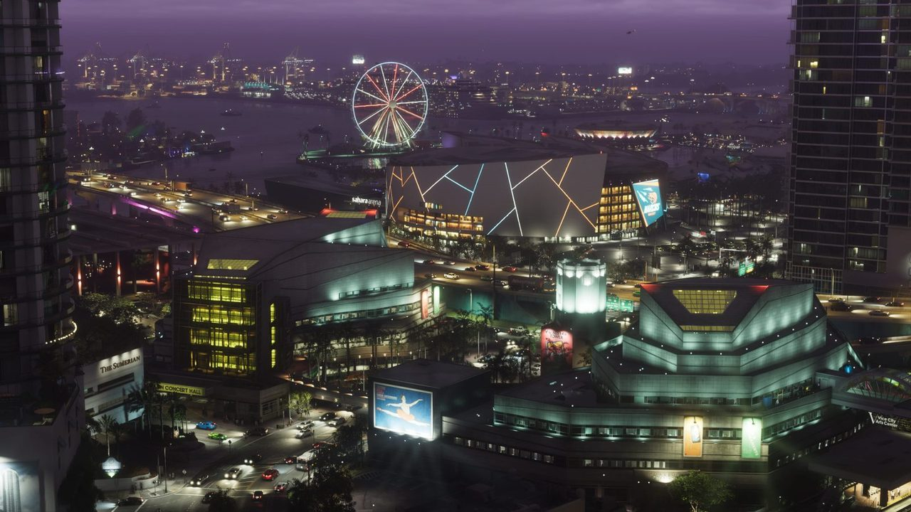
GTA 6 : l'option « Mini-jeux simplifiés » pour réussir plus facilement le perçage de coffre
Tu bloques sur le mini-jeu de perçage de coffre ? Active « Mini-jeux simplifiés » dans les paramètres : selon GTA Base, l'option rend ce mini-jeu plus facile, notamment dans la mission « Mot de sécurité ».
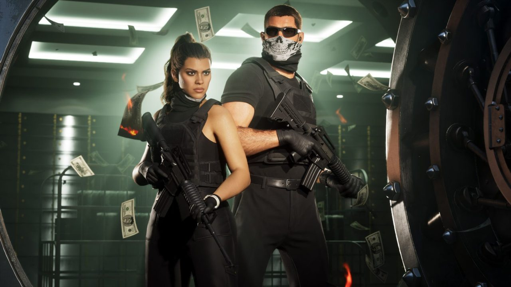
Codes de coffres-forts dans GTA 6 : où les trouver et que faire sans code
Dans GTA 6, les codes de coffre changent à chaque braquage : inutile de chercher une liste. Fouille les gardes neutralisés, les post-it et les écrans d'ordinateur, sinon crochète le coffre ou fais-le sauter aux explosifs. Un seul code fixe circule : 0420 pour la mission Lab Fees (à tester).

GTA 6 : comment améliorer la relation entre Jason et Lucia (4 niveaux, actions et conséquences)
Dans GTA 6, la relation de Jason et Lucia a 4 niveaux, de « Running on Empty » à « Hot Together ». Tu la fais monter en tenant la main, en répondant aux SMS, en dormant à la planque et en faisant braquages et sorties à deux ; elle ne peut jamais être rompue, mais elle influence des dialogues et une fin.
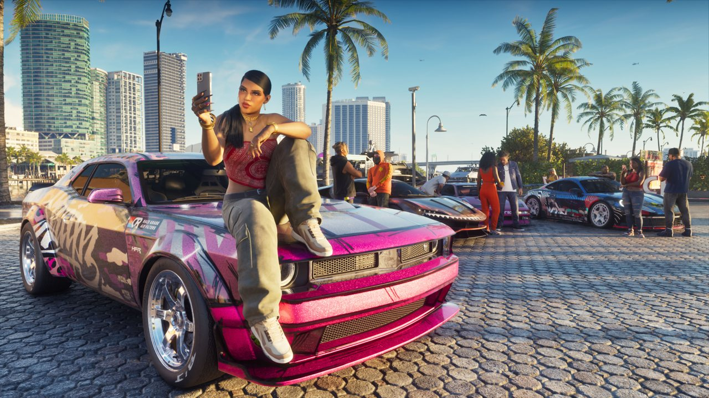
GTA 6 : comment activer la conduite automatique partout (et réduire les dégâts des véhicules)
Dans GTA 6, la conduite automatique refuse de s'activer en situation risquée tant que tu ne changes pas un réglage : Paramètres > Jeu > Accessibilité, option « Conduite Automatique » sur « Non limitée ». Selon Gameblog, une autre option y réduit aussi les dégâts des véhicules.
Raccourcis cachés GTA 6 : 20 interactions que le jeu n'explique pas (manette)
GTA 6 cache des dizaines de gestes jamais expliqués : se baisser en voiture, pousser un véhicule en panne, couper la radio, vendre le butin depuis le coffre… Selon Gameblog, une vingtaine de raccourcis manette changent vraiment la vie. Voici les boutons (PS5 / Xbox), classés par usage.
GTA 6 : bug « Missing Persons », comment éviter de rester bloqué sur Lucia au chapitre 3
Au chapitre 3 de GTA 6, la quête secondaire « Missing Persons » (comté de Kelly) peut te laisser bloqué sur Lucia, sans retour possible sur Jason. Selon GAMINGbible, le bug persiste après la mise à jour 01.002.002 : fais des sauvegardes manuelles avant.

Erreur CE-108255-1 sur GTA 6 PS5 : comment régler le plantage (mise à jour 01.002.002)
L'erreur CE-108255-1 fait planter GTA 6 sur PS5, parfois dans la mission « Pipework » ou dès le prologue sur PS5 Pro. Le conseil de Sony : mettre le jeu à jour, car vider le cache ne suffirait pas.
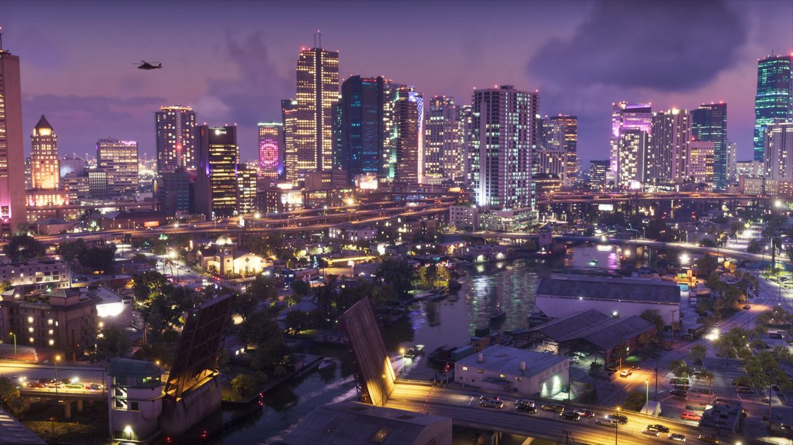
GTA 6 : 45 millions d'exemplaires vendus et 39 millions de joueurs sur PS5 (chiffres rapportés)
Cinq jours après sa sortie, GTA 6 aurait déjà atteint 45 millions d'exemplaires vendus selon Alinea, et Sony revendique 39 millions de joueurs sur PS5. Ce sont des chiffres rapportés, pas des annonces de Rockstar.

GTA 6 : la mise à jour 01.002.002 corrige les plantages, la météo bloquée et le niveau de recherche
Rockstar a publié le 23 novembre la première mise à jour de GTA 6 depuis la sortie : la 01.002.002 (environ 604 Mo sur PS5, 1,6 Go sur Xbox). Elle corrige des plantages, la météo qui ne changeait plus, une sauvegarde automatique défectueuse, des appels qui ne se lançaient pas et un bug qui empêchait de faire baisser les étoiles.
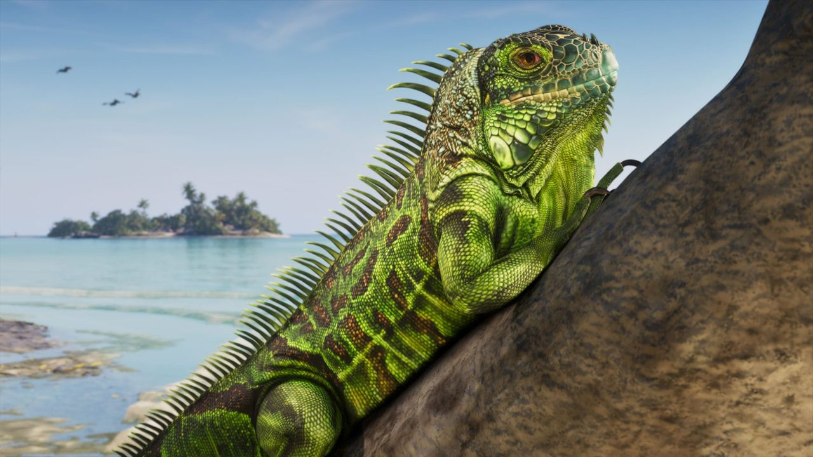
Animaux dans GTA 6 : peut-on caresser les chiens et les chats ? (et le chien en jet-ski)
Oui, tu peux caresser des animaux dans GTA 6 : les chiens proposent caresser, gronder ou observer, et des clips de joueurs montrent aussi des chats caressables, dont certains agressifs. Voici ce qui est confirmé, ce qui reste à tester et les secrets liés aux animaux.
GTA 6 : comment réparer la maison de Jason au chapitre 1 (5 réparations à ne pas rater)
Au chapitre 1 de GTA 6, tu peux réparer la maison de Jason à Key Lento : mur de la chambre, peinture, marches, barrière et toit. Selon Gameblog, ça donne un bonus de relation avec Lucia et quelques scènes inédites.
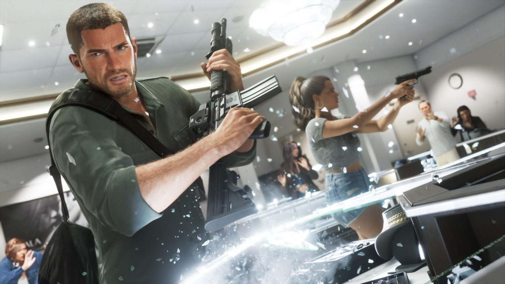
Braquage de bijouterie dans GTA 6 : les 5 meilleures cibles et la méthode, étape par étape
Pour braquer une bijouterie dans GTA 6, vise les boutiques de luxe : selon Gameblog, elles rapportent de 9 000 à 25 000 $, contre 1 000 à 10 000 $ pour une bijouterie classique. Entre par l'arrière-boutique, coupe caméras et alarme au bureau, puis vide vitrines et coffre.

Quête secrète OVNI et aliens dans GTA 6 : où la trouver, étapes et récompenses
La quête secrète des aliens de GTA 6 se déclenche la nuit, seul, après minuit, à partir du chapitre 2, près d'une voiture abandonnée aux feux clignotants dans le comté de Kelly. Selon Big N, elle débloque le trophée « La vérité est ailleurs » puis des bonus permanents.
GTA 6 : mot de passe du laptop de Vanessa et garage Auntie's Place à La Perle (voiture rose gratuite)
Le mot de passe du laptop de Vanessa dans GTA 6 est Muffins, Queen, 15. Selon Big N, il ouvre un message qui mène au garage d'Auntie's Place, à La Perle, où t'attend la Pink Growler de Vanessa et un casier d'armes.

Scooterbros dans GTA 6 : comment faire livrer ou remorquer ta voiture presque partout
Scooterbros est un service payant de GTA 6 qui remorque et livre un véhicule presque n'importe où. Selon ActuGaming, il est inutilisable quand tu es recherché par la police.
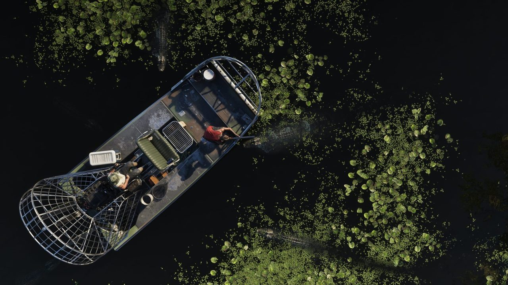
WAiNK dans GTA 6 : comment scanner animaux, véhicules et monuments (et pourquoi le faire)
Dans GTA 6, tu scannes les animaux, les véhicules et les monuments avec l'application WAiNK de ton téléphone. Selon ActuGaming, la manette vibre plus fort quand tu t'approches d'un élément scannable, et une même voiture avec une autre peinture est à rescanner.

Comment se soigner dans GTA 6 : Zombix, nourriture et boissons
Dans GTA 6, tu te soignes surtout avec le Zombix, un médicament vendu dans les supérettes, et tu renforces tes jauges en mangeant et en buvant avant de partir. Tu peux même le faire en conduisant ou en tirant.
GTA 6 : un nid d'œufs en haut d'une tour cache un easter egg (rumeur)
Un joueur affirme avoir grimpé une tour à Leonida, trouvé un nid avec des œufs colorés et déclenché une courte scène en en lançant un sur une voiture en contrebas. Pour l'instant, c'est une rumeur : seul IBTimes UK le relaie, à partir d'une vidéo sur X.

Comment sauvegarder dans GTA 6 : sauvegarde manuelle, autosave et 15 emplacements
Dans GTA 6, tu sauvegardes à la main depuis le menu pause (Options sur PS5, Menu sur Xbox, puis Jeu > Sauvegarder), n'importe où en monde ouvert, dans l'un des 15 emplacements. Le jeu a aussi une autosave séparée, mais elle ne marche pas pendant une mission ni pendant le prologue.

Édition Ultimate GTA 6 : comment récupérer tous les bonus (et à quel chapitre)
Les bonus de l'Édition Ultimate de GTA 6 ne sont pas tous dispo dès le début : ils se débloquent chapitre par chapitre, dans des garages, des Ammu-Nation et des boutiques précises. Voici où aller pour chacun, d'après Dexerto.
GTA 6 : comment avoir plus d'emplacements de véhicules (4 au départ)
Tu démarres GTA 6 avec 4 emplacements de véhicules personnels. Pour en avoir plus, il faut acheter des garages, et selon Playnews on dépasse la douzaine de places avec tous ceux de Leonida.

GTA 6 : le post Snapmatic qui se moque de « Race and Chase 7 » (secret facile à voir)
Dans le faux réseau social du jeu, un utilisateur râle qu'un jeu inspiré d'un dessin animé de ferme est sorti avant « Race and Chase 7 ». C'est un clin d'œil au tout premier GTA, et selon Journal du Geek on le croise assez tôt.
GTA 6 : le premier record du monde en speedrun est tombé, après 50 heures sans dormir
Deux jours après la sortie, un streamer revendique le premier record du monde de speedrun sur GTA 6. Il aurait tenu plus de 50 heures sans dormir pour boucler le jeu, selon Gamewave.
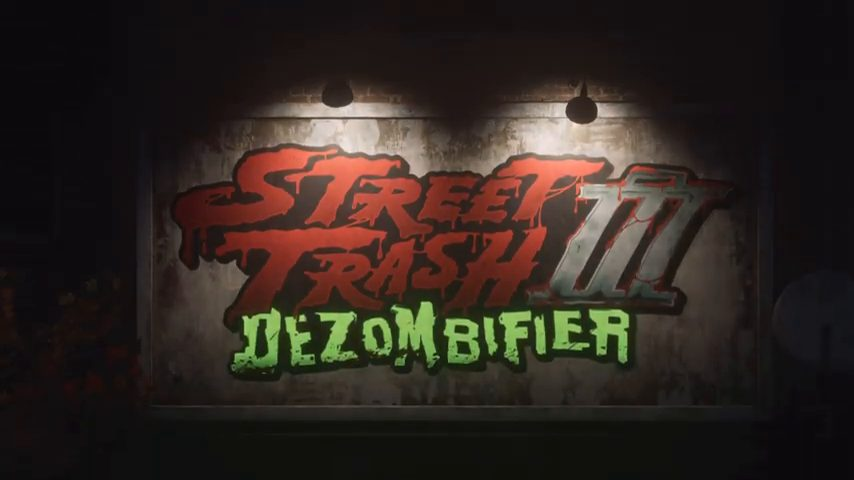
GTA 6 cache deux jeux vidéo jouables : Street Trash III et Tenebrae Lux (on y a joué)
Dans la maison de Jason, la console du salon fait tourner de vrais petits jeux : un jeu de zombies vu du dessus, Street Trash III : Dézombifier, et un jeu d'énigmes en noir et blanc, Tenebrae Lux. On les a testés sur PS5, captures à l'appui.
GTA 6 review bombé sur Metacritic : 99 pour la presse, environ 5 sur 10 pour les joueurs
Deux jours après la sortie, la note des joueurs de GTA 6 sur Metacritic est tombée autour de 5 sur 10 sur PS5, alors que la presse lui met 99. Entre trolls, critiques sur le couple Jason-Lucia et vraies plaintes techniques, on fait le tri.
Radio secrète de Kodak Black dans GTA 6 : comment débloquer The Sniper of La Perle (4 affiches)
Pour débloquer la playlist cachée de Kodak Black dans GTA 6, il faut scanner 4 affiches avec ton téléphone : 3 dans le quartier de La Perle et 1 au Jack of Hearts, à Crosstown. Aucune mission à faire, tu peux t'en occuper dès que Vice City est ouverte.
Armes uniques GTA 6 : où trouver les meilleures armes gratuites dès le début
Pas besoin de vider ton compte à l'Ammu-Nation : GTA 6 cache une douzaine d'armes uniques gratuites dans Leonida, la plupart accessibles dès le chapitre 1. Revolvers, fusils de sniper, SMG militaire, lance-roquettes… voici où les récupérer, d'après le guide de KeenGamer.

Oiseaux dans GTA 6 : comment les observer aux jumelles et les ajouter au carnet de faune
GTA 6 compte une soixantaine d'espèces d'oiseaux (62 selon Rockstar, d'après Vice et GTA BOOM), qu'on observe aux jumelles pour remplir un carnet de faune. Les amateurs d'ornithologie s'en donnent déjà à cœur joie. Voici comment ça marche et où chercher.
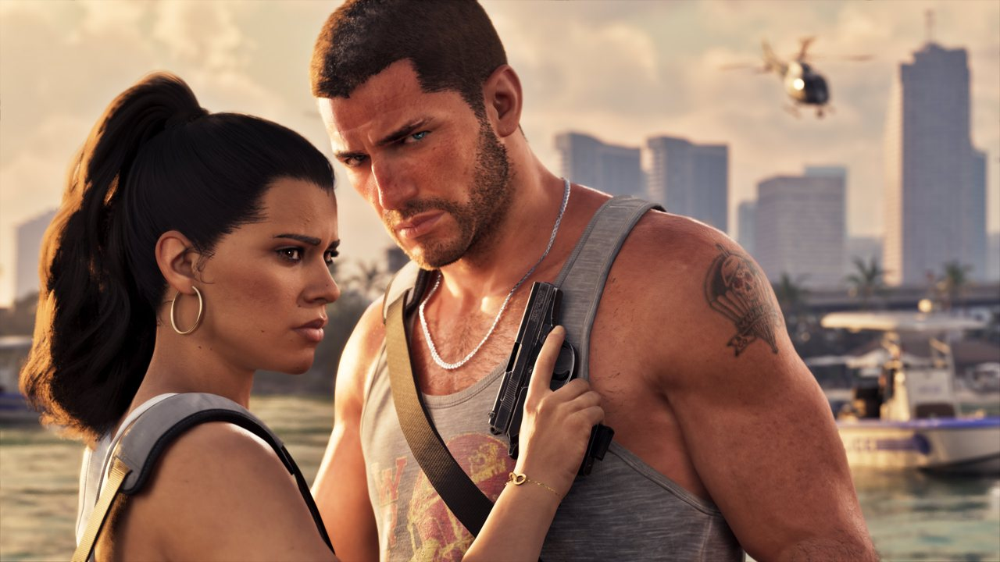
Trophées GTA 6 : la liste des 55 succès et comment avoir le platine (sans spoiler)
GTA 6 compte 55 trophées, platine compris, d'après la liste publiée par PC Gamer. Une bonne partie est liée à l'histoire, mais plus de 30 se débloquent avec les activités, les braquages, les courses et les collectibles. Voici lesquels viser en priorité, sans rien te gâcher du scénario.
GTA 6 The Festival : le concert géant de Rockstar à Miami, c'est ce soir (programme et diffusion)
Rockstar et PlayStation fêtent la sortie de GTA 6 ce samedi 21 novembre avec « Grand Theft Auto VI: The Festival » au Mana Wynwood de Miami. Travis Scott, Cardi B, Don Toliver ou Metro Boomin sont annoncés. Pour l'instant, aucune diffusion en direct n'a été annoncée.
GTA 6 : 3,79 milliards de dollars en un jour, Rockstar donne enfin les chiffres officiels
C'est officiel : selon Rockstar et Take-Two, GTA 6 a généré 3,79 milliards de dollars de ventes le jour de sa sortie, avec 32,5 millions d'exemplaires écoulés avant même le lancement.

Le mystère du Mont Chiliad (GTA 5) refait surface dans GTA 6
Des joueurs ont entendu des passants de GTA 6 parler des phénomènes étranges du Mont Chiliad, la grande énigme de GTA 5. Ça se passe au début du jeu, dans une mission avec Jason : tends l'oreille. À tester en jeu.

Peut-on acheter une maison dans GTA 6 ? Garages, prix et planques expliqués
Non, tu ne peux pas acheter de maison dans GTA 6 : les planques se débloquent avec l'histoire. En revanche, tu peux acheter 8 garages, de 4 000 à 40 000 $, via l'appli Vice City Real Estate de ton téléphone. Voici la liste complète et les prix.
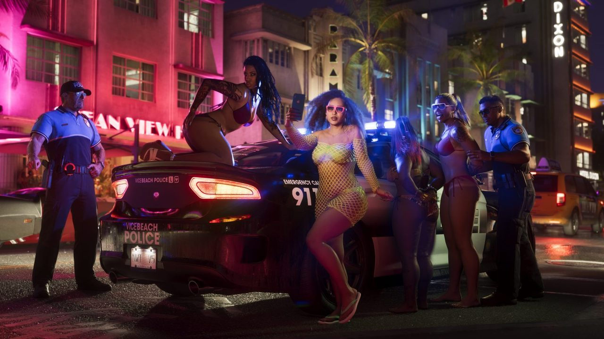
Radio secrète The Vault dans GTA 6 : où la trouver et comment la débloquer
The Vault est une station cachée de GTA 6 : elle ne s'affiche pas dans ta liste de radios tant que tu n'as pas scanné une affiche rouge avec l'appli Waink, à l'intérieur de la boîte de nuit The Vault, dans Downtown Vice City.
GTA+ dans le mode histoire de GTA 6 : voiture et garage réservés aux abonnés, les joueurs râlent
Une Elegy widebody, un garage à Crosstown et 10 % de réduction en ville : GTA 6 réserve des bonus solo aux abonnés GTA+. Des joueurs qui ont payé le jeu plein pot parlent de « paywall ». Rockstar n'a pas encore réagi.
GTA 6 aurait rapporté 2,36 milliards de dollars en un jour : presque 3 fois GTA 5
Selon une estimation de Sensor Tower relayée par Reuters, GTA 6 s'est vendu à environ 24,6 millions d'exemplaires numériques au soir du jour de sortie, pour près de 2,36 milliards de dollars. Take-Two n'a encore donné aucun chiffre officiel.
Jeux vidéo dans GTA 6 : où trouver les 4 jeux jouables (console et bornes d'arcade)
GTA 6 cache 4 vrais petits jeux vidéo : trois sur la console JoySystem de la maison, un sur des bornes d'arcade comme celle de Bargain World à Port Gellhorn. En finir un seul débloque le trophée « Stick Fiddler ».
GTA 6 sans disque : le patron de GameStop dénonce un « code dans une boîte »
GTA 6 est sorti sans disque, même en boîte. Ryan Cohen, le PDG de GameStop, estime que le tout-numérique « fait du tort aux joueurs », alors que son enseigne en vend pourtant beaucoup.

GTA 6 Online : quand sort le multijoueur ? Ce qu'on sait vraiment
Non, GTA 6 n'a pas de mode en ligne pour l'instant. Le jeu est sorti le 19 novembre en solo uniquement, et Rockstar n'a donné aucune date pour GTA 6 Online. La seule piste sérieuse parle de 2027, mais elle ne vient pas de Rockstar.
GTA 6 bat le record du streaming : près de 8 millions de spectateurs en même temps
GTA 6 est devenu le lancement de jeu le plus regardé de l'histoire du live. Selon Streams Charts, le jeu a réuni plus de 7,9 millions de spectateurs simultanés sur Twitch, YouTube et Kick, plus de quatre fois l'ancien record.
Comment jouer en vue à la première personne dans GTA 6 (PS5 et Xbox)
GTA 6 n'a pas d'option « vue FPS » dans ses menus, mais une manip avec le téléphone permet de basculer en première personne. Voici comment faire sur PS5 et Xbox, et le piège à connaître avant d'essayer.
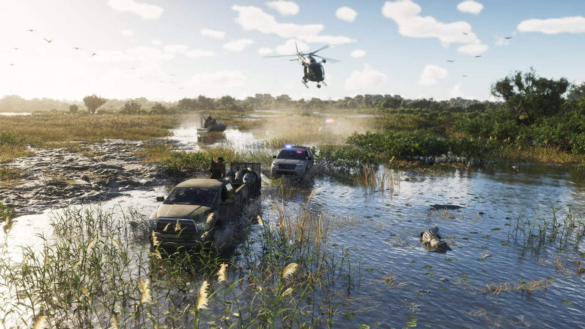
GTA 6 trop dur ? Le « mode facile » caché dans les options d'accessibilité
GTA 6 n'a pas de choix de difficulté, mais ses options d'accessibilité font office de mode facile : ennemis moins résistants, voiture plus solide, mini-jeux simplifiés. Et d'après Push Square, ça ne bloque aucun trophée.
Le bateau de Michael (GTA 5) est-il dans GTA 6 ? Ce que les joueurs ont repéré
Devant la planque de Jason, un voilier ressemble trait pour trait au Marquis que Michael De Santa possédait dans GTA 5. Et son GPS afficherait Los Santos. Clin d'œil ou coïncidence ? On fait le point, sans spoiler.
Radios de GTA 6 : la liste des 22 stations, leurs animateurs et leurs meilleurs titres
GTA 6 compte 22 radios : 20 stations musicales et 2 stations parlées. Bad Bunny, Lana Del Rey, Morgan Wallen, Burna Boy et « Weird Al » Yankovic tiennent le micro. Voici quelle station choisir selon tes goûts.
C'est bien « Weird Al » Yankovic que tu entends sur Vice City FM dans GTA 6
Oui, la voix survoltée de la radio années 80 de GTA 6 est celle de « Weird Al » Yankovic. Le roi de la parodie l'a confirmé lui-même : il anime Vice City FM et prête aussi sa voix aux pubs Burger Shot.
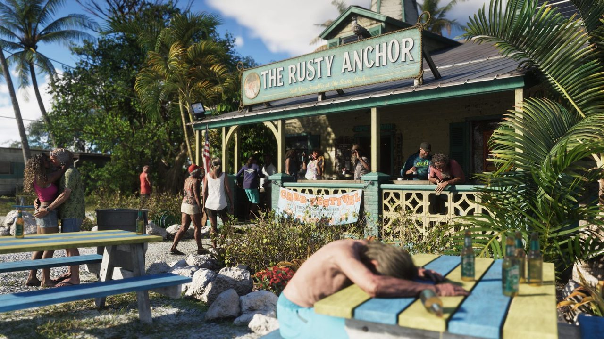
GTA 6 : où trouver l'argent caché du perroquet (mission du rhum de Shirley)
Un perroquet qui parle te révèle une cachette d'argent derrière le magasin Three Sheets Liquor, à Key Lento. Il suffit de faire la petite mission du rhum pour Shirley, la voisine de Jason. Voici le chemin exact.
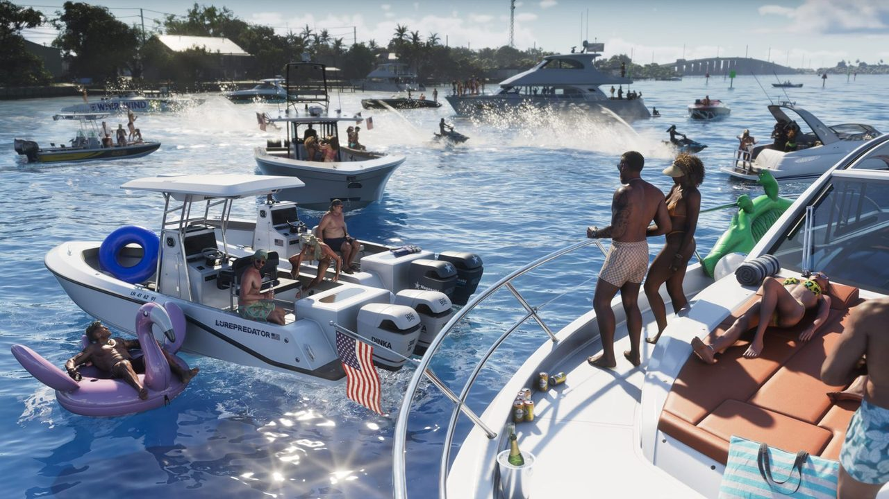
Comment pêcher dans GTA 6 : canne gratuite, commandes, meilleurs spots et trophée
La pêche est dispo dès le free roam, sans permis : ta première canne t'attend gratuitement au bout du ponton derrière la maison de Jason, à Key Lento. Voici les commandes, les bons coins et l'astuce pour le trophée.
GTA 6 supprime les prostituées et les petites amies : Rockstar mise tout sur le couple Jason et Lucia
Fini les rencontres tarifées et les copines à collectionner comme dans San Andreas : dans GTA 6, tu ne peux embrasser que ton partenaire. Rockstar assume ce choix au nom de l'histoire, et ça fait parler.
GTA 6 : un développeur de Rockstar dit craindre des licenciements après la sortie
Le jour même où GTA 6 sort sous les éloges, un programmeur de Rockstar Édimbourg raconte dans le Guardian que ses collègues et lui ont peur pour leur emploi. Aucun licenciement n'est annoncé, mais il appelle à se syndiquer.
Comment retourner une voiture dans GTA 6 (et s'asseoir) : les 2 commandes cachées
Ta voiture est sur le toit ? Pas besoin de la laisser brûler : approche-toi, clique sur le stick gauche puis maintiens Carré (PS5) ou X (Xbox) pour la remettre sur ses roues. Et pour t'asseoir, maintiens Rond ou B.
Pas de fléchettes ni de bowling dans GTA 6 : Rockstar explique pourquoi
Les fléchettes et le bowling ont disparu de GTA 6. Selon VGC, Rockstar assume : sans le temps de les rendre vraiment bons, l'équipe a préféré ne pas les faire du tout.
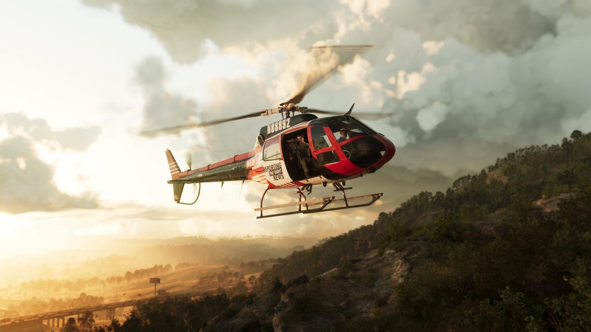
GTA 6 censuré au Japon : Jason passe sous la douche… en string
La version japonaise de GTA 6 cache la nudité masculine avec un string noir. Les joueurs japonais l'ont repéré dès le lancement, et la comparaison tourne partout sur les réseaux.
Liste de Randy dans GTA 6 : où trouver les voitures rares à voler
Randy, le vendeur de Leonida Auto World, te paie pour lui ramener 22 voitures de luxe. Voici les 10 premières déjà localisées, avec l'heure et le lieu.
GTA 6 en 60 FPS sur PS5 Pro ? Rockstar répond non, et explique pourquoi
Pas de mode 60 FPS, ni même 40 FPS : GTA 6 tourne à 30 images par seconde sur toutes les consoles, PS5 Pro comprise. Rockstar met en cause le processeur des machines.
Où trouver la voiture de Paul Walker (Fast & Furious) dans GTA 6
La Mitsubishi Eclipse verte de Brian O'Conner est cachée dans un garage de villa sur Vespucci Island, à Vice City. Voici comment la récupérer.

Comment jouer à GTA 6 sur Xbox One grâce au Cloud Gaming
Pas de version Xbox One, mais tu peux y jouer en streaming via Xbox Cloud Gaming, à condition d'acheter le jeu. Voici ce qu'il faut savoir.
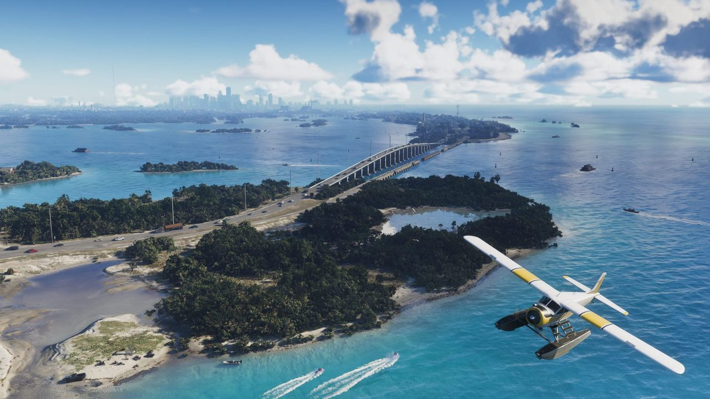
Carte de GTA 6 : les 6 régions de Leonida expliquées
Vice City, les Keys, les marais, la côte oubliée, la campagne et la montagne : le tour de Leonida pour savoir où aller.
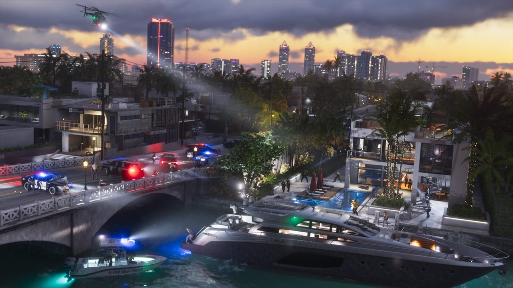
Police dans GTA 6 : comment fonctionne le système de recherche et comment semer les flics
Six étoiles, des icônes rouges et des flics qui se souviennent de toi : la police de GTA 6 ne marche plus comme avant.
Les réglages PS5 à faire pour bien jouer à GTA 6
Le jeu tourne à 30 images par seconde sur toutes les consoles, donc pas de miracle côté fluidité. Mais quelques réglages changent vraiment l'image et le son.
Comment éviter les spoilers de GTA 6 sur X, TikTok, YouTube et Reddit
Des streamers ont déjà fini l'histoire et les vidéos circulent. Voici comment protéger ta partie en 5 minutes.
GTA 6 aurait déjà dépassé 17 millions de ventes : le record de GTA 5 explose
Ce sont des estimations, pas des chiffres officiels, mais tout indique le plus gros lancement de l'histoire du divertissement.
GTA 6 plante ou ta PS5 s'éteint ? Les réflexes à avoir
Sauvegardes perdues, jeu qui se ferme, console qui s'éteint : des joueurs signalent des soucis. Voici quoi faire en attendant un patch.
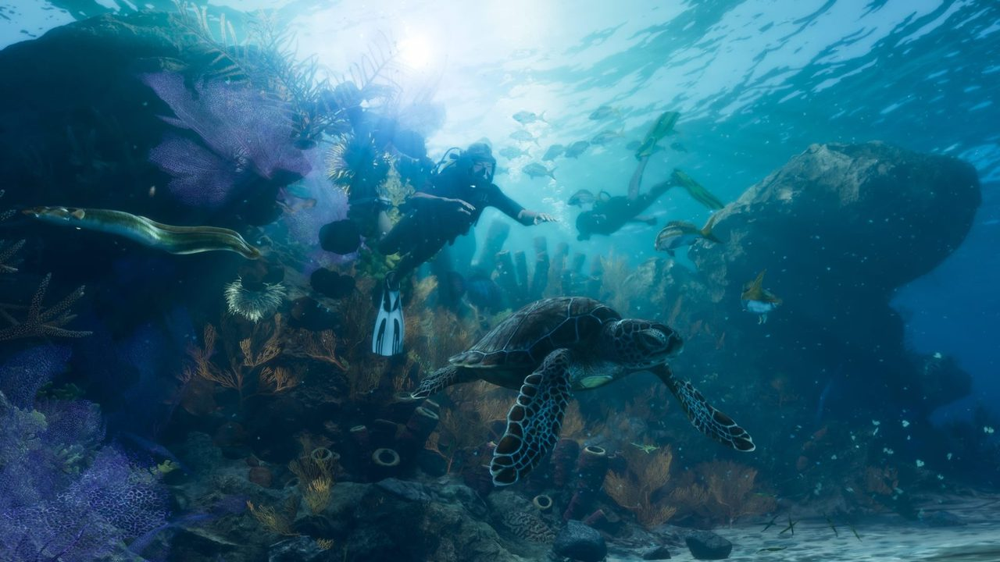
Argent au début de GTA 6 : 5 astuces pour ne pas finir fauché
Planque sous le plancher, plongées au trésor, voitures à revendre : ce qui marche dans les premiers chapitres, sans glitch.
L'appartement de Dexter est dans GTA 6 (et son bateau aussi ?)
Rockstar a recréé l'immeuble de Miami où vivait Dexter Morgan. On t'explique où le trouver.

Bigfoot, crabe géant, chien en jet-ski : les secrets trouvés en 24 heures
Les joueurs fouillent Leonida depuis une journée et les easter eggs tombent déjà. Voici les plus fous.
Un streamer dit avoir fini GTA 6 en 7 heures : les joueurs n'y croient pas
Le streamer N3on affirme avoir bouclé l'histoire en direct en une nuit. Rockstar, lui, parlait plutôt de 80 heures.
Œuf de Pâques géant, maison cachée depuis 2021 : les premiers secrets de GTA 6
Quelques heures après le déblocage en Nouvelle-Zélande, les joueurs trouvent déjà des easter eggs. Voici ceux qui sont relayés par la presse.
Le PlayStation Network craque avant la sortie de GTA 6
Connexions impossibles, message « services occupés » : des milliers de joueurs PS5 bloqués quelques heures avant minuit.
10 astuces pour bien démarrer GTA 6 (sans spoiler)
Caresser les chiens, manger en conduisant, semer la police en changeant de tenue : les réflexes à prendre dès la première heure.
« L'astuce Nouvelle-Zélande » : jouer à GTA 6 avant tout le monde, mais à quel prix ?
Le jeu se débloque à minuit heure locale. Des milliers de joueurs changent de région pour y jouer 12 heures plus tôt. On t'explique les risques.
GTA 6 devient le jeu le mieux noté de l'histoire
99 sur Metacritic, une pluie de 10/10 : les tests sont tombés la veille de la sortie, et Rockstar bat tous les records.
GTA 6 : heure de sortie, taille, patchs… tout ce qu'il faut savoir avant minuit
Minuit pile en France, jusqu'à 212 Go, mise à jour PS5 obligatoire et pas de mode online : la checklist avant de lancer ta partie.
Images : Rockstar Games (captures officielles), sauf mention contraire. Site de fans non officiel, non affilié à Rockstar Games ni à Take-Two.